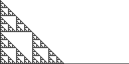

|  |
| The gasket and line segment example
suggests a plausible relation is |
| db(A ∪ B) = max{db(A), db(B)} |
| We argue this is true, at least under reasonale assumptions. |
| For a given box size r, denote by NA(r), NB(r), and NA ∪ B(r)
the number of boxes of side length r needed to cover A, B, and A ∪ B. |
| Then certainly it is true that |
| NA(r) ≤ NA ∪ B(r) ≤ NA(r) + NB(r) |
| and |
| NB(r) ≤ NA ∪ B(r) ≤ NA(r) + NB(r) |
| Consequently |
| max{NA(r), NB(r)} ≤ NA ∪ B(r) ≤ NA(r) + NB(r) |
| Say NA(r) = max{NA(r), NB(r)}. Then |
| NA(r) ≤ NA ∪ B(r) ≤ NA(r)⋅(1 + NB(r)/NA(r)) |
| Log is an increasing function, so taking Log gives |
| Log(NA(r)) ≤ Log(NA ∪ B(r)) | ≤ Log(NA(r)⋅(1 + NB(r)/NA(r))) |
| = Log(NA(r)) + Log(1 + NB(r)/NA(r)) |
|
| Taking r small enough that 1/r > 1, dividing by Log(1/r) (which is > 0 because 1/r > 1) gives |
| Log(NA(r))/Log(1/r) ≤ Log(NA ∪ B(r))/Log(1/r) |
| ≤ Log(NA(r))/Log(1/r) + Log(1 + NB(r)/NA(r))/Log(1/r) |
|
| Because NB(r) ≤ NA(r), the numerator
Log(1 + NB(r)/NA(r)) is ≤ Log(2) and so |
| Log(1 + NB(r)/NA(r))/Log(1/r) → 0 as r → 0 |
| Now, as r → 0, |
| Log(NA(r))/Log(1/r) → db(A) and |
| Log(NA ∪ B(r))/Log(1/r) → db(A ∪ B) |
|
| so db(A ∪ B) lies between two terms, both of which go to db(A) =
max{db(A), db(B)}. |
| Our argument includes some simplifying assumptions, but the main points are contained in this sketch. |
|